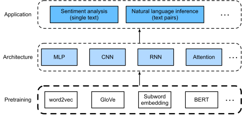
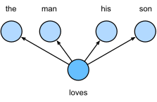
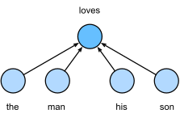

Pretrain¶
To understand text, we can begin with its representation, such as treating each word or subword as an individual text token.
As we will see, the representation of each token can be pretrained on a large corpus, using word2vec, GloVe, or subword embedding models. After pretraining, representation of each token can be a vector.
However, it remains the same no matter what the context is. Many more recent pretraining models adapt representation of the same token to different contexts. Among them is BERT.

word2vec¶
Previously, we use one-hot vectors to represent words, although they are easy to construct, they are usually not a good choice:
cannot accurately express the similarity between different words
dimension explosion
Word2vec is a tool that we came up with to solve the problem above.
The Word2vec tool contains two models: skip-gram and continuous bag of words (CBOW).
skip-gram model¶
The skip-gram model assumes that a word can be used to generate the words surround it.
Assume that the text sequence is “the man loves his son”. We use “loves” as the central target word and set the context window size to 2

the probability we concerned is:
assume the context words are generated independently of each other:
In the skip-gram model, each word is represented as two \(d\)-dimension vectors.
the central target vector \(v_{i}\)
the context vector \(u_{i}\)
The conditional probability of generating the context word \(w_{o}\) for the given central target \(w_{c}\) word can be obtained by performing a softmax operation on the vector inner product:
for a text sequence \(\{w^{(1)},...,w^{(T)}\}\), the likelihood function of the skip-gram model of window size \(m\):
Here, any time step that is less than 1 or greater than 𝑇 can be ignored.
log-likelihood function:
if we use SGD, we can get the gradient with respect to \(v_{c}\) from the formula above:
similarily, we can get the gradient with respect to \(u_{o}\):
the gradient with respect to \(u_{i}(i\ne{o})\):
computational complexity of each gradient is \(O(|V|)\).
generally we used \(v_{c}\) as the representation vector of a word.
continous bag of words(CBOW) model¶
the CBOW model assumes that the central target word is generated based on the context words.

the probability we concerned is:
Since there are multiple context words in the CBOW model, we will average their word vectors to compute the conditional probability.
In the CBOW model, each word is represented as two \(d\)-dimension vectors.
the central target vector \(v_{i}\)
the context vector \(u_{i}\)
using softmax:
likelihood functions and gradient update rule are then derived similarily.
unlike skip-gram, generally we used \(u_{i}\) as the representation vector of a word
Negative Sampling¶
to reduce computational complexity in gradient descent, we come up with the negative sampling method.
Recall the softmax conditional probability in skip-gram:
for particular \((w_{o}, w_{c})\), we want to maximize \(P(w_{o}|w_{c})\), that is to say we want:
1.\(u_{o}^{T}v_{c}\) be large \(\Leftrightarrow\) \(\sigma(u_{o}^{T}v_{c})\) be large
2.\(u_{i}^{T}v_{c} (i\ne{o})\) be small \(\Leftrightarrow\) \(\sigma(-u_{o}^{T}v_{c})\) be large
for the purpose of reduce computational complexity, instead of iterate all the “negative samples”, we sample \(K\) negative samples.
then instead of maximize:
we maximize:
in terms of log loss:
now computational complexity of each gradient step is \(O(|K|)\).
dataset for Pretraining Word Embedding¶
Reading the Dataset¶
import math
import os
import random
import torch
import d2l
#@save
d2l.DATA_HUB['ptb'] = (d2l.DATA_URL + 'ptb.zip',
'319d85e578af0cdc590547f26231e4e31cdf1e42')
#@save
def read_ptb():
data_dir = d2l.download_extract('ptb')
with open(os.path.join(data_dir, 'ptb.train.txt')) as f:
raw_text = f.read()
return [line.split() for line in raw_text.split('\n')] # split to lines
sentences = read_ptb()
f'# sentences: {len(sentences)}'
'# sentences: 42069'
vocab = d2l.Vocab(sentences, min_freq=10)
f'vocab size: {len(vocab)}'
'vocab size: 6719'
subsampling¶
Generally speaking, in a context window, it is better to train lower-frequency words.
Therefore, when training the word embedding model, we drop out words depend on it’s frequency:
The dropout probability is given as:
where \(c\) is a hyperparameter (set to \(10^{-4}\) in this experiment)
#@save
def subsampling(sentences, vocab):
# Map low frequency words into <unk>
sentences = [[vocab.idx_to_token[vocab[tk]] for tk in line]
for line in sentences]
# Count the frequency for each word
counter = d2l.count_corpus(sentences)
num_tokens = sum(counter.values())
# Return True if to keep this token during subsampling
def keep(token):
return (random.uniform(0, 1) < math.sqrt(
1e-4 / counter[token] * num_tokens))
# Now do the subsampling
return [[tk for tk in line if keep(tk)] for line in sentences]
subsampled = subsampling(sentences, vocab)
subsampling significantly reduced the sequence length.
d2l.set_figsize()
d2l.plt.hist([[len(line) for line in sentences],
[len(line) for line in subsampled]])
d2l.plt.xlabel('# tokens per sentence')
d2l.plt.ylabel('count')
d2l.plt.legend(['origin', 'subsampled']);
"""we map each token into an index to construct the corpus"""
corpus = [vocab[line] for line in subsampled]
corpus[0:3]
[[], [71, 32, 2115, 406], [5277, 3054, 1580, 95]]
Extracting Central Target Words, Context Words and Negatives¶
#@save
def get_centers_and_contexts(corpus, max_window_size):
"""Extracting Central Target Words and Context Words"""
centers, contexts = [], []
for line in corpus:
# Each sentence needs at least 2 words to form a "central target word
# - context word" pair
if len(line) < 2:
continue
centers += line
for i in range(len(line)): # Context window centered at i
# context window size uniformly between integer 1 and the max_window_size
window_size = random.randint(1, max_window_size)
indices = list(
range(max(0, i - window_size),
min(len(line), i + 1 + window_size)))
# Exclude the central target word from the context words
indices.remove(i)
contexts.append([line[idx] for idx in indices])
return centers, contexts
all_centers, all_contexts = get_centers_and_contexts(corpus, 5)
f'# center-context pairs: {len(all_centers)}'
'# center-context pairs: 353046'
instead of calling random.choices every time. we define a RandomGenerator according to sampling_weights.
#@save
class RandomGenerator:
"""Draw a random int in [0, n] according to n sampling weights."""
def __init__(self, sampling_weights):
self.population = list(range(len(sampling_weights)))
self.sampling_weights = sampling_weights
self.candidates = []
self.i = 0
def draw(self):
if self.i == len(self.candidates):
self.candidates = random.choices(self.population,
self.sampling_weights, k=10000)
self.i = 0
self.i += 1
return self.candidates[self.i - 1]
generator = RandomGenerator([2, 3, 4])
[generator.draw() for _ in range(10)]
[2, 2, 2, 2, 1, 1, 2, 1, 2, 1]
according to the original paper:
#@save
def get_negatives(all_contexts, corpus, K):
counter = d2l.count_corpus(corpus)
sampling_weights = [counter[i]**0.75 for i in range(len(counter))]
all_negatives, generator = [], RandomGenerator(sampling_weights)
for contexts in all_contexts:
negatives = []
while len(negatives) < len(contexts) * K:
neg = generator.draw()
# Noise words cannot be context words
if neg not in contexts:
negatives.append(neg)
all_negatives.append(negatives)
return all_negatives
all_negatives = get_negatives(all_contexts, corpus, 5)
Bachify¶
#@save
def batchify(data):
"""to specify the minibatch reading method in the DataLoader instance"""
max_len = max(len(c) + len(n) for _, c, n in data)
centers, contexts_negatives, masks, labels = [], [], [], []
for center, context, negative in data:
cur_len = len(context) + len(negative)
centers += [center]
contexts_negatives += [context + negative + [0] * (max_len - cur_len)]
masks += [[1] * cur_len + [0] * (max_len - cur_len)]
labels += [[1] * len(context) + [0] * (max_len - len(context))]
return (torch.tensor(centers).reshape(
(-1, 1)), torch.tensor(contexts_negatives), torch.tensor(masks),
torch.tensor(labels))
Combine All Things Together¶
#@save
def load_data_ptb(batch_size, max_window_size, num_noise_words):
sentences = read_ptb()
vocab = d2l.Vocab(sentences, min_freq=10)
subsampled = subsampling(sentences, vocab)
corpus = [vocab[line] for line in subsampled]
all_centers, all_contexts = get_centers_and_contexts(
corpus, max_window_size)
all_negatives = get_negatives(all_contexts, corpus, num_noise_words)
class PTBDataset(torch.utils.data.Dataset):
def __init__(self, centers, contexts, negatives):
assert len(centers) == len(contexts) == len(negatives)
self.centers = centers
self.contexts = contexts
self.negatives = negatives
def __getitem__(self, index):
return (self.centers[index], self.contexts[index],
self.negatives[index])
def __len__(self):
return len(self.centers)
dataset = PTBDataset(all_centers, all_contexts, all_negatives)
data_iter = torch.utils.data.DataLoader(dataset, batch_size, shuffle=True,
collate_fn=batchify,
num_workers=0) # set num_workers=0 to avoid error
return data_iter, vocab
data_iter, vocab = load_data_ptb(512, 5, 5)
names = ['centers', 'contexts_negatives', 'masks', 'labels']
for batch in data_iter:
for name, data in zip(names, batch):
print(name, 'shape:', data.shape)
break
centers shape: torch.Size([512, 1])
contexts_negatives shape: torch.Size([512, 60])
masks shape: torch.Size([512, 60])
labels shape: torch.Size([512, 60])
Pretraining word2vec¶
import torch
from torch import nn
embed = nn.Embedding(num_embeddings=20, embedding_dim=4)
print(f'Parameter embedding_weight ({embed.weight.shape}, '
'dtype={embed.weight.dtype})')
Parameter embedding_weight (torch.Size([20, 4]), dtype={embed.weight.dtype})
skip-gram model¶
def skip_gram(center, contexts_and_negatives, embed_v, embed_u):
v = embed_v(center)
u = embed_u(contexts_and_negatives)
pred = torch.bmm(v, u.permute(0, 2, 1)) # (b, a, w) * (b, w, b) -> (b, a, b)
return pred
skip_gram(torch.ones((2, 1), dtype=torch.long),
torch.ones((2, 3), dtype=torch.long), embed, embed).shape
torch.Size([2, 1, 3])
Binary Cross Entropy Loss Function¶
class SigmoidBCELoss(nn.Module):
"BCEWithLogitLoss with masking on call."
def __init__(self):
super().__init__()
def forward(self, inputs, target, mask=None):
out = nn.functional.binary_cross_entropy_with_logits(
inputs, target, weight=mask, reduction="none")
return out.mean(dim=1)
loss = SigmoidBCELoss()
pred = torch.tensor([[.5] * 4] * 2)
label = torch.tensor([[1., 0., 1., 0.]] * 2)
mask = torch.tensor([[1, 1, 1, 1], [1, 1, 0, 0]])
loss(pred, label, mask)
tensor([0.7241, 0.3620])
loss(pred, label, mask) / mask.sum(axis=1) * mask.shape[1] # compute real mean loss
tensor([0.7241, 0.7241])
training¶
embed_size = 100
net = nn.Sequential(
nn.Embedding(num_embeddings=len(vocab), embedding_dim=embed_size), # for central embedding
nn.Embedding(num_embeddings=len(vocab), embedding_dim=embed_size)) # for context embedding
def train(net, data_iter, lr, num_epochs, device=d2l.try_gpu()):
def init_weights(m):
if type(m) == nn.Embedding:
nn.init.xavier_uniform_(m.weight)
net.apply(init_weights)
net = net.to(device)
optimizer = torch.optim.Adam(net.parameters(), lr=lr)
animator = d2l.Animator(xlabel='epoch', ylabel='loss',
xlim=[1, num_epochs])
metric = d2l.Accumulator(2) # Sum of losses, no. of tokens
for epoch in range(num_epochs):
timer, num_batches = d2l.Timer(), len(data_iter)
for i, batch in enumerate(data_iter):
optimizer.zero_grad()
center, context_negative, mask, label = [
data.to(device) for data in batch]
pred = skip_gram(center, context_negative, net[0], net[1])
l = (
loss(pred.reshape(label.shape).float(), label.float(), mask) /
mask.sum(axis=1) * mask.shape[1]) # a little different due to mask
l.sum().backward()
optimizer.step()
metric.add(l.sum(), l.numel()) # numel Returns the total number of elements in the input tensor
if (i + 1) % (num_batches // 5) == 0 or i == num_batches - 1:
animator.add(epoch + (i + 1) / num_batches,
(metric[0] / metric[1],))
print(f'loss {metric[0] / metric[1]:.3f}, '
f'{metric[1] / timer.stop():.1f} tokens/sec on {str(device)}')
lr, num_epochs = 0.01, 5
train(net, data_iter, lr, num_epochs)
loss 0.373, 37292.3 tokens/sec on cpu
def get_similar_tokens(query_token, k, embed):
W = embed.weight.data
print(W.shape)
x = W[vocab[query_token]]
print(x.shape)
# Compute the cosine similarity. Add 1e-9 for numerical stability
cos = torch.mv(
W, x) / torch.sqrt(torch.sum(W * W, dim=1) * torch.sum(x * x) + 1e-9)
print(cos.shape)
topk = torch.topk(cos, k=k + 1)[1].cpu().numpy().astype('int32')
for i in topk[1:]: # Remove the input words
print(f'cosine sim={float(cos[i]):.3f}: {vocab.idx_to_token[i]}')
get_similar_tokens('football', 3, net[0])
torch.Size([6719, 100])
torch.Size([100])
torch.Size([6719])
cosine sim=0.548: basketball
cosine sim=0.488: baseball
cosine sim=0.483: sports